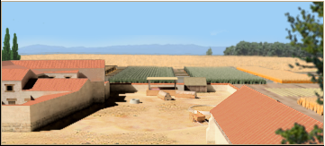

RTR: Imperium Surrectum
RTR: Imperium SurrectumLumber Industry
3 levels, each replacing the one before it — you upgrade in place rather than building alongside.
Lumber Camp (Rural) → Sawmill (Rural) → Timber Exports (Rural)
Levels at a glance
| Level | Cost | Build time | Minimum settlement | Upgrades to | Level | Cost | Build time | Minimum settlement | Upgrades to | ||
|---|---|---|---|---|---|---|---|---|---|---|---|
| Lumber Camp (Rural) | 700 | 2 | town | Sawmill (Rural) | Sawmill (Rural) | 2,100 | 3 | large town | Timber Exports (Rural) | ||
| Timber Exports (Rural) | 8,400 | 5 | city | — |
Costs in denarii, build time in turns.
Lumber Camp (Rural)

Warmth, and shelter from the elements, can be found here naturally.
Wood has been a staple of life and trade for as long as humans have cut down trees.
The life of a logger is not for the faint-hearted; it takes grit and a hearty appetite for danger to bring down the towering trees. With axes in hand and a thirst for adventure (and firewood), the loggers hack their way through forests. They risk life and limb for timber, each swing of the axe chipping away at the raw material that will become homes, warships, and perhaps a warm fire on a cold night.
Timber forms the very backbone of civilization, supplying shelter, fuel, and the means to build an empire. From small carts to majestic triremes, this vital industry stands at the heart of both comfort and conquest. For every tree felled, there’s a future built, and so the logger’s legacy lives on, as eternal as wood itself.
Boat and ship building developed throughout the ages and timber supplies were crucial when establishing a navy.
Strategy
The construction bonus to walls only applies to tier 1 wooden pallisades.
| Cost | 700 denarii | Build time | 2 turns | Minimum settlement | town | Upgrades to | Sawmill (Rural) |
Requirements — all of these must hold before this level can be built.
- any faction
- the region does not have the hidden resource
nobuild(nobuilding) - the region has the timber resource
- no building tagged
rural_exploitsis built or queued here (no_other_rural_exploits) - Government Building
Show the condition as the game files write it
factions { all, } and nobuilding and resource timber and no_other_rural_exploits and requires_gov
What it does
- construction cost bonus military +10
- construction cost bonus other +10
- +3 taxable income
Show 2 effects that apply only in the circumstances shown
- construction cost bonus religious +5 — only when
factions { barbarian, germanic, brittonic, celtiberian, dacian, thracian, illyrian, } - construction cost bonus defensive +10 — only when
not building_present_min_level defenses wooden_pallisade
Sawmill (Rural)

The place where kingdoms rise and logs fall, and from which empires are both built and fuelled.
At the sawmill, trees are taken apart piece by piece to become smooth planks and beams.
Whether it’s a humble house or a mighty warship, the sawmill’s efforts power our nation’s construction projects.
No longer is it enough to simply chop down trees, now we cut them in organized, orderly fashion. Sawdust clouds the air, and the hum of the saws rings out as trees are transformed into beams and boards fit for construction.
Whether it’s a fine home for a noble or a sturdy deck for a war galley, the sawmill’s product is at the very heart of civilization’s rise.
Strategy
The construction bonus to walls only applies to tier 1 wooden pallisades.
| Cost | 2,100 denarii | Build time | 3 turns | Minimum settlement | large town | Upgrades to | Timber Exports (Rural) |
Requirements — all of these must hold before this level can be built.
- any faction
- the region does not have the hidden resource
nobuild(nobuilding) - the region has the timber resource
- Government Building
Show the condition as the game files write it
factions { all, } and nobuilding and resource timber and requires_gov
What it does
- construction cost bonus military +20
- construction cost bonus other +15
- +4 taxable income
- +1 trade income
Show 2 effects that apply only in the circumstances shown
- construction cost bonus religious +10 — only when
factions { barbarian, germanic, brittonic, celtiberian, dacian, thracian, illyrian, } - construction cost bonus defensive +20 — only when
not building_present_min_level defenses wooden_pallisade
Timber Exports (Rural)

From great ships of war to humble homes, this is where wood goes from raw to royal.
Where timber is chopped, shaped, and cursed into service for an ever-growing nation, this region is the heart of woodwork and wood wars.
Here, skilled hands fell trees and turn them into everything from simple buildings to warships that sail like they’re made of... well, wood. Whether for palaces or palisades, every timber here has a purpose, shaped and cursed into service by these hardworking men.
It’s here that forests bow to the needs of civilization, and each fallen tree becomes another pillar of the nation’s strength. These sturdy lumberjacks keep your nation’s fires burning, the walls standing, and the ships afloat, one log at a time.
Strategy
The construction bonus to walls only applies to tier 1 wooden pallisades.
| Cost | 8,400 denarii | Build time | 5 turns | Minimum settlement | city |
Requirements — all of these must hold before this level can be built.
- any faction
- the region does not have the hidden resource
nobuild(nobuilding) - the region has the timber resource
- Local Market at Local Market or above is built here
- Trading Port or River Port or above
- anywhere in your empire does not have the hidden resource
timber_supply_built(not_timber_supply_built) - Direct Rule or Homeland
Show the condition as the game files write it
factions { all, } and nobuilding and resource timber and building_present_min_level market market and water_transport and not_timber_supply_built and direct_govs
What it does
- construction cost bonus military +20
- construction cost bonus other +20
- +5 taxable income
- +3 trade income
- (Faction) Ports gain +1 special attack for ships and slingers (does not stack with local timber, but can stack with pitch and hemp on higher level ports)
Show 2 effects that apply only in the circumstances shown
- construction cost bonus religious +10 — only when
factions { barbarian, germanic, brittonic, celtiberian, dacian, thracian, illyrian, } - construction cost bonus defensive +20 — only when
not building_present_min_level defenses wooden_pallisade
What the shorthands in those conditions stand for (6)
| Shorthand | Stands for | Shorthand | Stands for | Shorthand | Stands for | Shorthand | Stands for |
|---|---|---|---|---|---|---|---|
direct_govs | building_present governmentC or building_present governmentD | no_other_rural_exploits | no_building_tagged rural_exploits queued | nobuilding | not hidden_resource nobuild | not_timber_supply_built | not hidden_resource timber_supply_built factionwide |
requires_gov | building_present governmentA or building_present governmentB or building_present governmentC or building_present governmentD or not is_player | water_transport | building_present_min_level river_port river_port1 or building_present_min_level port_buildings port |